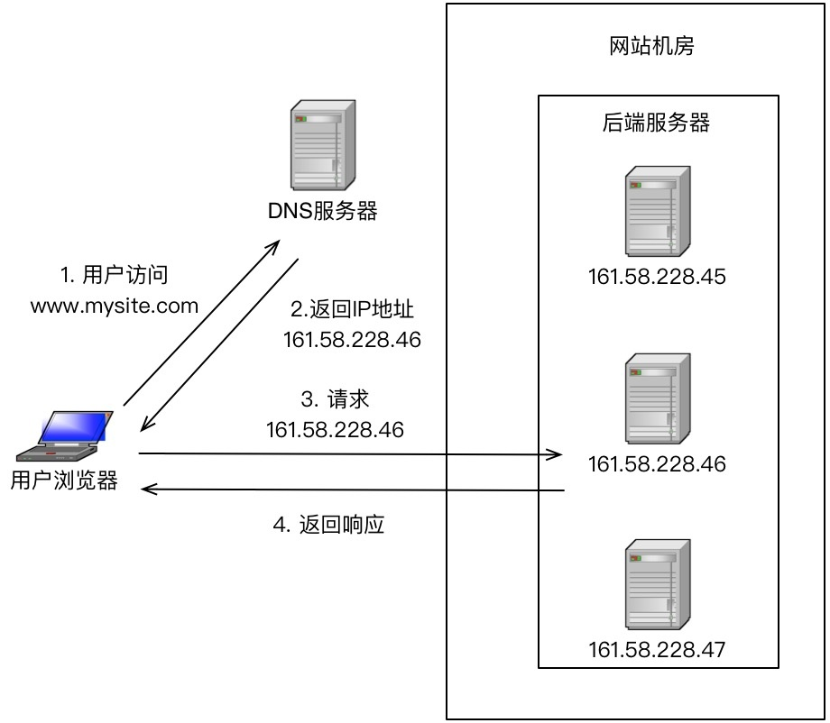
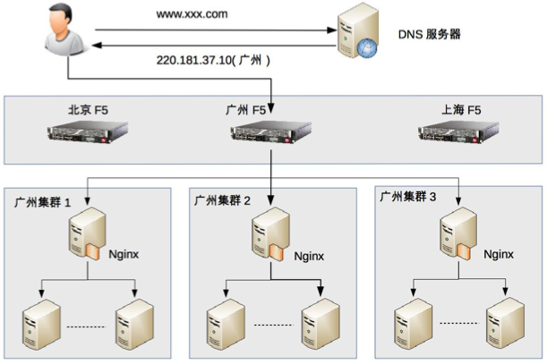

19-高性能负载均衡：分类及架构
前言
单服务器无论如何优化，都会达到一个性能瓶颈。如果单服务器无法达到我们的性能要求，那么就需要设计高性能服务器集群的方式来提升系统的整体性能。
高性能服务器集群的本质就是通过增加服务器来提升系统的整体计算能力。
高性能服务器集群的设计复杂度在于需要一个任务分配器，并且为这个任务分配器选择一个合适的分配算法。任务分配器的另一个通用说法是“负载均衡器”。任务分配并不仅仅是考虑计算单元的负载均衡，不同的任务分配算法目标是一样的，有的基于负载考虑，有的基于性能考虑，有的基于业务考虑。
提示
负载均衡并不只是为了计算单元的负载均衡状态。
负载均衡的分类主要有三种：DNS负载均衡、硬件负载均衡、软件负载均衡
DNS负载均衡
DNS负载均衡是一种最简单也是最常见的一种负载均衡方法，一般用于实现地理级别的均衡。比如北京地区的用户访问北京的机房，深圳地区的用户访问深圳的机房。其本质是DNS解析同一个域名可以返回到不同的IP。
下面是DNS负载均衡示意图：

DNS负载均衡的优点：
- 简单、成本低。负载均衡交给DNS服务器处理，无须自己开发或者维护负载均衡设备。
- 就近访问、提升访问性能。
DNS负载均衡的缺点：
- 更新不及时，DNS缓存的时间比较长，修改DNS配置后，由于缓存的原因，还是会有很多的用户访问之前的IP，这样的访问会失败，无法达到负载均衡的目的，并且也影响用户正常使用业务。
- 扩展性差：DNS负载均衡的控制权在域名服务商那里，无法根据业务特点对其做更多的扩展和定制性功能。
- 分配策略比较简单：DNS负载均衡支持的算法很少，不能区分服务器的差异，也无法感知后端服务器的状态。
硬件负载均衡
硬件负载均衡是指通过单独的硬件设备来实现负载均衡功能，可以理解为一个用于负载均衡的基础网络设备。目前业界典型的硬件负载均衡产品有：F5和A10。这类设备性能强劲，功能强大，但是价格不便宜。
硬件负载均衡的优点：
- 功能强大：全面支持各种层级的负载均衡、支持全面的负载均衡算法、支持全局负载均衡。
- 性能强大：软件负载均衡能达到10w左右，但硬件负载均衡能达到100w左右。
- 稳定性高：商用负载均衡设备，经过良好的严格测试、经过大规模使用，稳定性高。
- 支持安全防护：除了支持负载均衡外，还具备防火墙、防DDOS攻击等安全功能。
硬件负载均衡的缺点：
- 价格昂贵
- 扩展能力差，可以根据业务配置，但是无法扩展和个性化定制。
软件负载均衡
软件负载均衡通过负载均衡软件实现负载均衡功能，一般有nginx和LVS。其中nginx是软件的七层负载均衡，LVS是linux内核的4层负载均衡。4层和7层的区别在于协议和灵活性。nginx支持http和email协议。LVS是4层架构，与协议无关，几乎所有的应用都可以做。
软件和硬件的区别在于性能，硬件的负载均衡性能远远大于软件的负载均衡性能。nginx的性能是万级。一般linux装上nginx大概能到5万/s。LVS的性能是10万级，而F5的性能是百万级的。
除了可以使用开源的系统进行负载均衡，如果业务比较特殊，也可以基于开源系统进行定制，甚至自研。
软件负载均衡的优点：
- 简单：部署和维护都简单
- 便宜：机器便宜
- 灵活：可以根据业务选择4层或7层负载均衡，也可以根据业务自研和定制化。
软件负载均衡的缺点：
- 性能一般：一个Nginx大约支撑5万的并发。
- 功能没有硬件负载均衡强大。
- 一般不具备防火墙和防DDOS攻击等功能。
负载均衡典型架构
一般会对上面三种负载均衡方式进行组合使用。组合的具体原则是：DNS负载均衡实现地理级别的负载、硬件负载均衡实现集群级别的负载均衡、软件负载均衡实现机器级别的负载均衡。
具体可以参考下图：

整体系统的负载均衡分为三层：
- 地理级别的负载均衡：www.xxx.com部署在北京、广东、上海三个机房，当用户访问时，DNS会根据用户的地理位置来决定返回哪个机房的ip。图中返回了广东机房的IP，这样用户就可以访问到广东机房了。
- 集群级别的负载均衡：广东机房的负载均衡用的是F5,F5接到用户请求后，进行集群级别的负载均衡，将用户请求发给3个集群中的其中一个，假设F5将用户请求发给了“广东集群2”。
- 机器级别的负载均衡：广东集群的负载均衡使用的是Nginx,nginx收到用户请求后，将用户请求发送给具体的某台服务器，服务器处理用户请求，并返回业务结果。
上述架构一般只有在大型业务场景下才会使用，如果没有那么大的业务场景，不需要严格遵守上述架构。